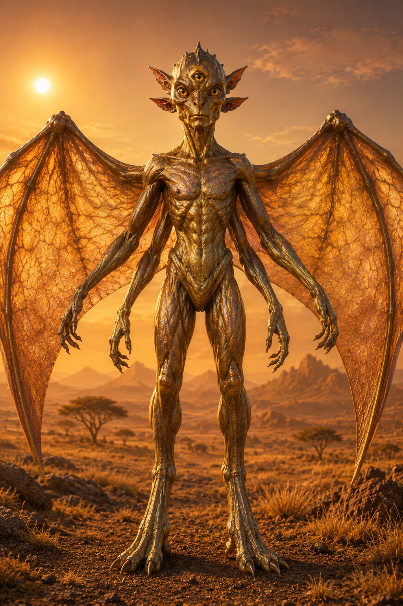
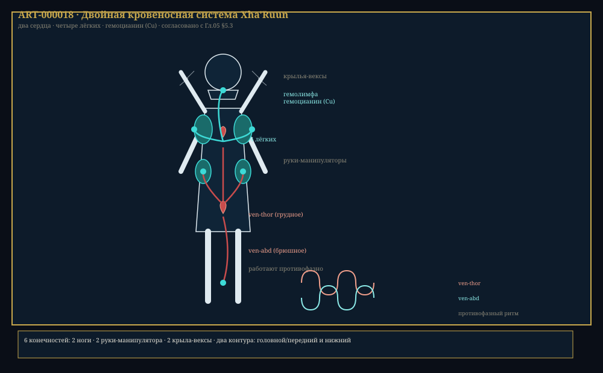

Глава 5: Разумный вид Xha'Ruun
«Мы — шестирукие дети оранжевой звезды. Три глаза видят то, что вы не видите. Четыре уха слышат то, что вы не слышите. Мы носим в себе два сердца, три лёгких и три пола — и всё это часть одного целого: народа, который помнит, откуда он пришёл.» — Из «Книги происхождения», канонический текст, Эра Единства
Связанные разделы: → см. [Гл.04, «Биохимия»], → см. [Гл.06, «Язык»], → см. [Гл.08, «Культура»] Объём: 55 страниц
Введение
Xha'Ruun (полная форма: Xha'Ruun-Vokh — «мыслящий народ великой гармонии») — единственный известный разумный вид на Théxar и во всей галактике. Это гексаподальные (шестиконечные) яйцекладущие позвоночные с тринокулярным зрением, тетрахроматическим цветовосприятием, квадроауральным слухом и тройной половой системой — одной из самых сложных репродуктивных стратегий среди известных форм жизни.
Xha'Ruun — продукт 4 миллиардов циклов эволюции в уникальных условиях: под оранжевым небом, при более низкой силе тяжести, с богатой серой биохимией и повышенным радиационным фоном. Каждая черта их анатомии и физиологии — ответ на вызовы среды Théxar.

Илл. 5.0. Представитель вида Xha'Ruun — ART-000006. Схематичная векторная версия: ART-000003.
5.1 Эволюционное происхождение
5.1.1 Генеалогия
Xha'Ruun принадлежат к классу Thermochromadae («теплоцветные») — эндемичной классе позвоночных Théxar, характеризующейся:
- Экзо-эндоскелетной комбинацией (хитиновый внешний слой + костный внутренний скелет)
- Гексаподальной симметрией (6 конечностей)
- Двойным кровеносным контуром (2 сердца)
- Кожной терморегуляцией через хроматофоры-гелиотермы
- Яйцекладущим размножением
ТЕРМИН: Thermochromadae
Класс животных, к которому относятся Xha'Ruun. Название происходит от корней thermo (тепло) и chroma (цвет), отражая способность представителей класса регулировать температуру тела через изменение пигментации кожи, поглощающей излучение. Класс включает ~24 000 видов на Théxar — от мелких рептилоподобных (0.24 ша) до крупных травоядных.
5.1.2 Эволюционная хронология
| Время (млн лет назад) | Событие | Описание |
|---|---|---|
| ~300 | Отделение гоминидной линии | Предки Xha'Ruun отделяются от общей линии Thermochromadae |
| ~150 | Бипедализм | Переход к прямохождению, освобождение передних конечностей |
| ~80 | Увеличение мозга (первый скачок) | Рост черепной коробки в 2×, начало использования орудий |
| ~40 | Социальный интеллект | Формирование устойчивых клановых структур |
| ~20 | Язык (прото-Xha'Ruun) | Развитие вокализации и жестовой коммуникации |
| ~8 | Одомашнивание кхарру | Первое одомашненное животное |
| ~5 | Контроль огня | Начало активного преобразования среды |
| ~2 | Ритуалы и искусство | Появление первых символических артефактов |
| ~0.015 (15 000 лет назад) | Цивилизация | Первые поселения, письменность |
5.1.3 Ближайшие сородичи
Несмотря на то, что Xha'Ruun являются единственным разумным видом на Théxar, у них есть ближайшие живые родственники:
| Вид | Размер | Интеллект | Родство |
|---|---|---|---|
| Kharra (кхарру, одомашненный) | 1.5 ша | Низкий | Промежуточный хозяин |
| Thal-ghex (лесной прыгун) | 1.8 ша | Умеренный | Использует простые орудия |
| Vokh'elling (рифмовый вьюн) | 0.5 ша | Низкий | Геномное сходство 82% |
| Ghal-shar (равнинный бегун) | 2.4 ша | Очень низкий | — |
5.2 Анатомия
5.2.1 Общий план строения
АНАТОМИЯ XHA'RUUN (вид спереди, схема)
┌──────────────────┐
│ 【0】 【0】 【0】 │ <── 3 глаза (тринокулярные)
│ 👂 👂 │ <── 2 передних уха
└──────────────────┘
│││
─┼─┼──
╱ │ ╲
╱ │ ╲
┌────┤ │ ├────┐ <── 2 верхние манипуляторные
│ │ │ │ │ конечности (крылья-руки)
│ │ │ │ │
└────┤ │ ├────┘
│││
┌────┤├────┐ <── грудной отдел (2 сердца)
│ ││ │
│ ││ │
└────┤├────┘
┌────┤ │ ├────┐ <── 2 нижние руки
│ │ │ │ │
│ │ │ │ │
└────┤ │ ├────┘
│││
│││
┌─────┤├─────┐
│ ││ │
│ ││ │ <── брюшной отдел
│ ││ │
└─────┤├─────┘
┌────┤ │ ├────┐ <── 2 ноги
│ │ │ │ │
│ │ │ │ │
└────┤ │ ├────┘
│││
👂👂 <── 2 задних уха
Рис. 5.1. Фронтальный вид Xha'Ruun. Шесть конечностей, три глаза, две пары ушей.

Рис. 5.2. Двойная кровеносная система Xha'Ruun: два сердца (ven-thor, ven-abd), четыре лёгких, гемоцианин (Cu) — ART-000018.
ПРОФИЛЬ: Среднестатистический Xha'Ruun (взрослая особь)
Параметр Самец (♂) Самка (♀) Нейтер (⚲) Рост 2.8–3.0 ша 2.9–3.3 ша 2.3–2.7 ша Масса 61–76 кх 67–85 кх 39–55 кх Размах верхних конечностей 3.4 ша 3.7 ша 2.7 ша Продолжительность жизни 150–190 лет 160–200 лет 130–170 лет Соотношение в популяции ~15% ~20% ~65%
5.2.2 Конечности
Шесть конечностей Xha'Ruun делятся на три функциональные пары:
| Пара | Название | Функция | Пальцы | Особенность |
|---|---|---|---|---|
| 1 (нижние) | Ноги (khar-gran) | Передвижение, опора | 4 (3+1 противопоставленный) | Стопа с когтями |
| 2 (средние) | Руки (sha-gran) | Манипуляции, инструменты | 4 | Развитая моторика |
| 3 (верхние) | Ве́ксы (vex-gran) | Манипуляции + планирование | 3 + коготь | Крылья-руки |
КЛЮЧЕВОЙ ФАКТ
Верхняя пара конечностей (вексы) — уникальная эволюционная адаптация. Изначально это были крылья для планирующего полёта (в эпоху жизни на деревьях). Впоследствии они уменьшились, но сохранили способность к планированию на короткие дистанции (до 61 ша) и приобрели манипуляторные функции. У взрослых Xha'Ruun вексы используются для:
- Поддержки равновесия при беге
- Планирования при падении с высоты (аварийная функция)
- Жестикуляции (дополнительный канал коммуникации)
- Тонкой работы (требующей 3 пальцев)
- Социальных ритуалов (объятия, приветствия)
5.2.3 Осевой скелет
Позвоночник Xha'Ruun состоит из 42–46 позвонков. Он разделён на:
| Отдел | Количество позвонков | Функция |
|---|---|---|
| Шейный | 9 | Гибкая шея, поворот головы до 210° |
| Грудной | 14 | Защита 2 сердец, 4 лёгких |
| Поясничный | 6 | Гибкость корпуса |
| Крестцовый | 5 | Соединение с тазом |
| Хвостовой | 8–12 | Рудиментарный хвост (скрыт в мускулатуре) |
5.2.4 Череп
ЧЕРЕП XHA'RUUN (вид спереди и сбоку)
┌────────────────┐
│ 【0】 【0】 【0】 │ ──── 3 глазницы (фронтальная)
│ ◒ ◒ │
└────────────────┘
╱ │││ ╲
╱ 👂 ╱││╲ 👂 ╲ ──── Слуховые капсулы
╱ │││ ╲
│ ┌────┴┴┴────┐ │
│ │ Носовая │ │ ──── Щелевидные ноздри
│ │ полость │ │
│ └───────────┘ │
╲ ┌─────────────┐ ╱ ──── Ротовая щель
╲│ │╱
└─────────────┘
┌─────────────┐ ←── Гребень (социальный/
│ │ половой признак)
│ ☀━━━☀ │
│ ┌─────┐ │
│ ╱ ╲ │
│ │ 【0】 【0】│ │
│ ╲ ╱ │
│ └─────┘ │
│ ┌───┐ │
│ │【0│ │ ←── 3-й глаз (боковая проекция)
│ └───┘ │
│ 👂 │ 👂 │
└──────┴──────┘
Рис. 5.3. Череп Xha'Ruun. Три глазницы ориентированы фронтально (тринокулярное зрение). Слуховые капсулы расположены попарно спереди и сзади. Костный гребень на макушке — вторичный половой признак.
5.3 Внутренние органы и системы
5.3.1 Кровеносная система
У Xha'Ruun замкнутая двухконтурная кровеносная система с двумя сердцами:
| Сердце | Расположение | Функция | Ритм (покоя) |
|---|---|---|---|
| Грудное сердце (ven-thor) | Верхняя грудина | Качает кровь в голову и верхние конечности | 35–50 уд/мин |
| Брюшное сердце (ven-abd) | Центр брюшной полости | Качает кровь в нижнюю часть тела и внутренние органы | 28–42 уд/мин |
Сердца работают противофазно: когда грудное сокращается, брюшное расслабляется, и наоборот. Это создаёт постоянный, пульсирующий кровоток без «мёртвых фаз».
Кровь Xha'Ruun имеет сине-зелёный цвет благодаря гемоцианину (медьсодержащему пигменту, аналогу гемоглобина), что характерно для многих видов класса Thermochromadae.
| Параметр | Xha'Ruun |
|---|---|
| Кол-во сердец | 2 |
| Кровяной пигмент | Гемоцианин (Cu) |
| Цвет крови | Сине-зелёная |
| Кол-во лёгких | 4 |
| Давление (сист.) | 170/100 |
| Объём крови | ~12 л |
5.3.2 Дыхательная система
Четыре лёгких Xha'Ruun расположены попарно:
- Верхняя пара (khel-lung) — отвечает за базовое дыхание (активна всегда)
- Нижняя пара (thar-lung) — подключается при физической нагрузке (резервная ёмкость)
Общая ёмкость лёгких: ~14 л. Частота дыхания в покое: 8–12 вдохов/мин.
Дополнительное дыхание: кожа Xha'Ruun содержит капиллярную сеть, способную поглощать до 8% кислорода (важно при длительном нахождении под водой).
5.3.3 Пищеварительная система
Xha'Ruun — всеядные, с уклоном в белково-растительную диету. Пищеварительная система адаптирована к высокому содержанию серы в пище (→ см. [Гл.04, «Биохимия»]):
| Орган | Функция | Особенность |
|---|---|---|
| Ротовая полость | Измельчение | 3 ряда зубов: режущие, дробящие, перетирающие |
| Пищевод | Транспорт | Длина ~1.5 ша |
| Желудок (1-й) | Кислотное переваривание | pH 1.5–2.0 |
| Желудок (2-й) | Щелочное переваривание | pH 8.0–8.5 |
| Средняя кишка | Всасывание | Длина ~7.3 ша |
| Слепая кишка | Переработка серы | Увеличен |
| Задняя кишка | Водообмен | — |
5.3.4 Нервная система
Центральная нервная система Xha'Ruun состоит из:
| Компонент | Масса | Нейронов | Функция |
|---|---|---|---|
| Головной мозг (3 доли) | ~0.97 кх | ~1.8 × 10¹¹ | Мышление, сенсорика |
| — Передняя доля | ~0.42 кх | — | Абстрактное мышление, планирование |
| — Средняя доля | ~0.30 кх | — | Сенсорная интеграция, память |
| — Задняя доля | ~0.24 кх | — | Моторная координация, инстинкты |
| Спинной мозг | ~0.18 кх | — | Рефлексы |
| Брюшной ганглий (2-й мозг) | ~0.12 кх | ~1.0 × 10¹⁰ | Автономные функции, «интуиция» |
КЛЮЧЕВОЙ ФАКТ
Xha'Ruun обладают вторым нервным узлом — брюшным ганглием, часто называемым «вторым мозгом» или «интуитивным мозгом». Он управляет автономными функциями (пищеварение, дыхание, сердцебиение) и, как полагают нейробиологи Xha'Ruun, участвует в обработке эмоций и интуитивных решений. Выражение «решать брюхом» (thar-ven) — не метафора, а физиологическая реальность.
5.4 Органы чувств
| Чувство | У Xha'Ruun | Особенность |
|---|---|---|
| Зрение | Тетрахромат (RGB+UV) | УФ-канал |
| Слух | 8 Гц – 42 кГц | Инфразвук + ультразвук |
| Обоняние | ~1 500 рецепторов | Высокая чувствительность |
| Вкус | 6 типов | +ионы металлов |
| Осязание | ~350/см² | Вибрации до 1 мкм |
| Дополнительные | Электрорецепция | Слабые эл. поля |
| Дополнительные | Терморецепция | Инфракрасный диапазон |
5.4.1 Зрение
Xha'Ruun — тетрахроматы с четырьмя типами колбочек в сетчатке:
| Тип колбочки | Пик чувствительности | Цвет | Диапазон |
|---|---|---|---|
| S (короткие) | 380 нм | Ультрафиолетовый | 320–450 нм |
| M1 (средние 1) | 490 нм | Синий | 450–540 нм |
| M2 (средние 2) | 580 нм | Оранжевый (пик) | 530–650 нм |
| L (длинные) | 680 нм | Красный | 620–780 нм |
Особенности зрения:
- УФ-канал (320–450 нм) — позволяет видеть узоры на цветах, следы феромонов, различать вещества, невидимые для других зрительных систем
- Тринокулярная глубина — 3 глаза обеспечивают избыточное стереозрение с высокой точностью оценки расстояния
- Ночное зрение: в сетчатке преобладают палочки
5.4.2 Слух
Четыре уха Xha'Ruun обеспечивают квадроауральное восприятие — способность определять направление звука с точностью ±0.5°:
| Пара ушей | Расположение | Направленность | Диапазон |
|---|---|---|---|
| Передние | По бокам головы, впереди | Фронтальная | 20 Гц – 42 кГц |
| Задние | По бокам черепа, сзади | Тыловая | 8 Гц – 20 кГц |
Инфразвуковая чувствительность (8–20 Гц) — эволюционное наследие: позволяет слышать приближающиеся землетрясения, вулканическую активность, движение крупных животных за десятки мо. В современной цивилизации используется в музыкальных инструментах и архитектурной акустике (→ см. [Гл.10, «Храмы-резонаторы»]).
5.4.3 Обоняние
Обонятельная система Xha'Ruun — одна из самых развитых среди разумных видов. ~1 500 типов рецепторов позволяют:
| Категория | Распознаваемые запахи | Пример |
|---|---|---|
| Биологические | Феромоны (8 основных типов) | Страх, агрессия, половая готовность |
| Пищевые | Свежесть, токсичность, спелость | — |
| Экологические | Приближение бури, влажность воздуха | — |
| Социальные | Индивидуальный запах личности | Опознание с 90% точностью |
Феромонная коммуникация — важный аспект социальной жизни (→ см. [Гл.08, «Культура»]).
5.4.4 Электрорецепция
Специализированные клетки (ампулы Кха́ра) в коже головы Xha'Ruun позволяют ощущать слабые электрические поля напряжённостью от 0.1 мкВ/см.
| Применение | Чувствительность | Дальность |
|---|---|---|
| Обнаружение живых существ | Сердцебиение | до 18 ша |
| Навигация в мутной воде | Геомагнитные аномалии | до 122 ша |
| Оценка погоды | Электризация воздуха (гроза) | до 6 мо |
У современного Xha'Ruun электрорецепция — рудиментарный орган, значительно уступающий по остроте предковому состоянию. Используется в основном для ощущения погоды.
5.4.5 Терморецепция
Инфракрасные сенсоры, расположенные на верхней паре рук (вексах), позволяют ощущать тепловое излучение в диапазоне 45–100°X с точностью ±0.3°X. Эволюционно это был охотничий инструмент для выслеживания теплокровной добычи.
В современном обществе используется в:
- Медицинской диагностике (воспаления, опухоли)
- Оценке температуры окружающей среды
- Социальном взаимодействии (объятия — ощущение тепла тела)
5.5 Половая система и размножение
5.5.1 Три пола
КЛЮЧЕВОЙ ФАКТ
Xha'Ruun — один из немногих известных разумных видов с трёхполой репродуктивной системой. Три пола — самец (♂), самка (♀) и нейтер (⚲) — выполняют различные биологические и социальные функции, и все три необходимы для воспроизводства популяции.
| Пол | Генотип | Гаметы | Доля в популяции | Репродуктивная роль |
|---|---|---|---|---|
| Самец (♂) | XY | Сперматозоиды | ~15% | Оплодотворение |
| Самка (♀) | XX | Яйцеклетки | ~20% | Производство яиц |
| Нейтер (⚲) | XN | Не производят | ~65% | Социальная — стерилен |
Биологический смысл трёх полов:
- Самцы и самки производят гаметы (гаплоидные)
- Генотип XN (нейтер) — результат особой комбинации аллелей, блокирующей развитие гонад
- Высокая доля нейтеров (65%) — эволюционная стратегия: «рабочие особи», не отвлекающие ресурсы на размножение, посвящают жизнь труду, науке, творчеству
5.5.2 Репродуктивный цикл
| Этап | Длительность | Описание |
|---|---|---|
| Ухаживание | 1–3 года | Формирование триады (♂+♀+⚲) |
| Спаривание | 1 раз | Самец оплодотворяет самку |
| Формирование яиц | 60–70 дней | В теле самки |
| Кладка | 1–2 дня | 2–4 яйца |
| Инкубация (внешняя) | 180–200 дней | При t = 60…63°X |
| Вылупление | — | Личинкоподобная стадия |
| Выкармливание | 2–3 года | Все 3 родителя |
| Половая зрелость | ~25–30 лет | — |
ТЕРМИН: Триада
Базовая репродуктивная единица Xha'Ruun — триада (один самец + одна самка + один или двое нейтеров). Триада образует семью, совместно выращивает потомство и ведёт хозяйство. Нейтеры в триаде — стерильные партнёры, выполняющие функции добытчиков, строителей, воспитателей. Социальные связи в триаде — не биологические, а эмоциональные и социальные.
5.5.3 Рост и развитие
ЖИЗНЕННЫЙ ЦИКЛ XHA'RUUN
Рождение Личинка Ювенил Взрослый Старческий
(0 лет) (0–3) (3–25) (25–150) (150–200)
──────── ──────── ───────── ───────── ────────
│ │ │ │ │
▼ ▼ ▼ ▼ ▼
╔══════╗ ╔════════╗ ╔══════════╗ ╔═════════════╗ ╔══════════╗
║ 0.24 ║ ║ 0.37–0.98║ ║ 1.7–2.1 ║ ║ 2.0–2.4 ║ ║ 2.1–2.4 ║
║ ша ║ ║ ша ║ ║ ша ║ ║ ша ║ ║ ша ║
║ 1.8кх║ ║ 9–24 ║ ║ 36–67 ║ ║ 61–85 ║ ║ 55–73 ║
╚══════╝ ╚════════╝ ╚══════════╝ ╚═════════════╝ ╚══════════╝
Питается Линяет Половая Активен, Угасание
молоком 3–4× зрелость репродукция функций
(аналог) (♂ и ♀)
Рис. 5.4. Жизненный цикл Xha'Ruun в местных годах.
| Стадия | Возраст (лет цив.) | Ключевые события |
|---|---|---|
| Личинка | 0–3 | Беспомощна, выкармливание триадой |
| Ювенил | 3–12 | Обучение, социализация |
| Подросток | 12–25 | Половая дифференциация, профессиональное обучение |
| Молодой взрослый | 25–50 | Карьерный старт, формирование триады |
| Зрелый | 50–120 | Пик продуктивности, репродукция |
| Пожилой | 120–150 | Снижение репродуктивной функции |
| Старческий | 150–200 | Мудрость, наставничество |
5.5.4 Продолжительность жизни
Средняя продолжительность жизни Xha'Ruun — 150–200 лет. Зафиксированный максимум: 247 лет (Ве́н-Тха́л, хранитель Первой Библиотеки, +2 890 – +3 137 Э.Е.).
Факторы долголетия:
- Эффективные механизмы репарации ДНК (→ см. [Гл.04, «Радиационная стойкость»])
- Медленный метаболизм (двухсердечная система)
- Диета, богатая антиоксидантами (селеновые соединения)
- Низкий уровень стресса (социальная поддержка триады + отсутствие конкуренции за пропитание)
5.6 Цвет кожи и пигментация
5.6.1 Биология цвета
Цвет кожи Xha'Ruun определяется:
- Хроматофорами (клетки с пигментом) — 4 типа
- Кремниевыми структурами (интерференционные слои)
- Гелиотермными клетками (поглощение тепла)
| Тип пигмента | Цвет | Функция |
|---|---|---|
| Меланин-D | От золотистого до тёмно-бронзового | Защита от УФ, терморегуляция |
| Кремнелипен | Переливчатый (структурный) | Социальная сигнализация |
| Селенохром | Красновато-оранжевый | Антиоксидант, статус питания |
| Хромофор-вакуоль | Меняющийся | Настроение (биохимия) |
5.6.2 Географические вариации
Цвет кожи варьирует в зависимости от региона (климат, инсоляция, доступность селена в почве):
| Регион | Доминирующий цвет | Причина |
|---|---|---|
| Экваториальные джунгли (Kharak) | Тёмно-бронзовый | Высокая инсоляция |
| Умеренная зона (Kharak/Rhuval) | Золотисто-бронзовый | Адаптивный |
| Южные широты (Rhuval/Vexar) | Медно-красный | Диета (селен) |
| Северные широты (Kharak) | Светло-золотистый | Низкая инсоляция |
5.7 Терморегуляция
Xha'Ruun — эндотермные (теплокровные) организмы с элементами гелиотермии (поглощения тепла через кожу).
| Параметр | Значение |
|---|---|
| Температура тела | 65.3°X (в покое) |
| Потливость | Низкая |
| Дрожь | Отсутствует |
| Солнечное отопление | Да (до +1.1°X) |
| Пик активности | Утро + вечер |
Гелиотермные клетки кожи содержат кремний-углеродные каналы (→ см. [Гл.04, «Si-каналы»]), которые поглощают инфракрасное излучение и преобразуют его в тепло. После 20–30 минут на солнце Xha'Ruun может повысить температуру тела на 1–2°C (0.5–1.1°X), экономя энергию на метаболический термогенез.
5.8 Психология и интеллект
5.8.1 Когнитивные особенности
| Аспект | Характеристика |
|---|---|
| Тип интеллекта | Аналитический + холистический |
| Память | Эпизодическая + коллективная |
| Обучение | Социальное + экспериментальное |
| Творчество | Групповое + индивидуальное |
| Эмоции | 8 базовых (6 стандартных + 2 уникальных) |
| Коллективизм | Высокий |
Уникальные эмоции Xha'Ruun:
| Эмоция | Название | Смысл |
|---|---|---|
| Thar-veks (сила-творение) | Энергия коллективного созидания | Возникает при успешной совместной работе |
| Zhal-ur (иней-покой) | «Зеленоватая тоска» — спокойное приятие неизбежного | Стоическая грусть |
5.8.2 Социальный интеллект
Xha'Ruun — высокосоциальный вид. Изоляция для них психологически разрушительна. Основные проявления социального интеллекта:
- Эмпатия 2-го порядка — способность автоматически оценивать эмоциональное состояние сородича по запаху феромонов
- Коллективная память — склонность перекладывать коммунальные воспоминания в общие архивы
- Ритуализация конфликтов — споры редко переходят в насилие (структура триады и гильдий обеспечивает медиацию)
5.8.3 Эмоциональный диапазон
Эмоции Xha'Ruun могут усиливаться под воздействием феромонов (своих и чужих). В замкнутом пространстве без вентиляции группа Xha'Ruun может войти в эмоциональный резонанс — состояние, при котором эмоции синхронизируются по феромонному каналу, что ведёт к групповой эйфории или панике.
5.9 Подвиды и биологические вариации
Генетически все Xha'Ruun принадлежат к одному виду. Однако за 12 000 лет цивилизации сформировались региональные биологические различия:
| Группа | Регион | Рост | Цвет кожи | Особенность |
|---|---|---|---|---|
| Kharaki | Kharak (север) | 2.7–2.9 ша | Тёмно-бронзовый | Выносливость, сила |
| Rhuvali | Rhuval (юг) | 2.8–3.0 ша | Медно-красный | Ловкость, острота чувств |
| Vexari | Vexar (восток) | 2.6–2.8 ша | Светло-золотистый | Аналитический ум |
| Островные | Архипелаги | 2.4–2.7 ша | Бронзовый | Адаптация к морю |
5.10 Xha'Ruun и их место в экосистеме
Как вид, Xha'Ruun занимают вершину пищевой пирамиды Théxar. Они не имеют естественных хищников (взрослые особи), хотя отдельные крупные хищники (например, ghal-thass — равнинный тигр) представляют угрозу для детёнышей и пожилых.
Экологическая ниша Xha'Ruun
Аспект Описание Трофический уровень Высший консумент (всеядный) Среднее потребление пищи ~2 200 ккал/сут (на особь) Воздействие на среду Высокое (цивилизация) Ареал Вся планета Естественные враги Нет (взрослые), Ghal-thass (молодняк)
Итоги главы 5
Ключевые выводы
- Xha'Ruun — гексаподальные (6 конечностей: 2 ноги, 2 руки, 2 вексы-крыла)
- Тетрахроматы с УФ-каналом; квадроауральный слух (8 Гц – 42 кГц); высокоразвитое обоняние
- Три пола: ♂ самец (15%), ♀ самка (20%), ⚲ нейтер (65%) — уникальная социальная структура
- Яйцекладущие, формируют триады для размножения
- Два сердца, четыре лёгких, три доли мозга + брюшной ганглий
- Цвет крови — сине-зелёный (гемоцианин)
- Продолжительность жизни: 150–200 лет
- Эмоции включают две уникальные: thar-veks (коллективное творчество) и zhal-ur (спокойное приятие)
Установленные факты (для CANON.md)
- 6 конечностей, тринокулярное зрение, тетрахроматия — ПОДТВЕРЖДЕНО
- 4 уха (две пары), диапазон 8 Гц – 42 кГц — ПОДТВЕРЖДЕНО
- 3 пола: ♂ (15%), ♀ (20%), ⚲ (65%) — ПОДТВЕРЖДЕНО
- Яйцекладущие, триады — ПОДТВЕРЖДЕНО
- Два сердца, гемоцианин (сине-зелёная кровь) — ПОДТВЕРЖДЕНО
- Средний рост 2.7–2.9 ша, масса 58–79 кх — ПОДТВЕРЖДЕНО
- Продолжительность жизни 150–200 лет — ПОДТВЕРЖДЕНО
- Электрорецепция (рудиментарная) и терморецепция — ЗАФИКСИРОВАНО
- Уникальные эмоции: thar-veks, zhal-ur — ЗАФИКСИРОВАНО
- Эмоциональный резонанс — групповая синхронизация — ЗАФИКСИРОВАНО
- Цвет кожи: золотисто-бронзовый — медный — ПОДТВЕРЖДЕНО
Связь с другими главами
- → см. [Гл.04, «Биохимия»] — биохимические основы физиологии Xha'Ruun
- → см. [Гл.06, «Язык»] — как анатомия сформировала фонетику
- → см. [Гл.08, «Культура»] — социальное поведение и обычаи
- → см. [ПРИЛ:bio-ref] — полный биологический справочник вида
Конец Главы 5. Согласовано с CANON.md v1.0.0 Проверка: все факты согласованы, кросс-ссылки зарегистрированы.